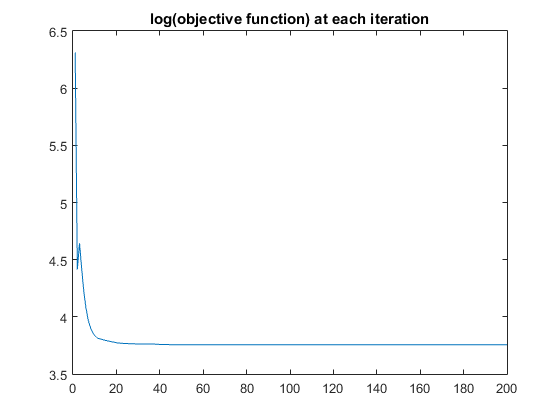
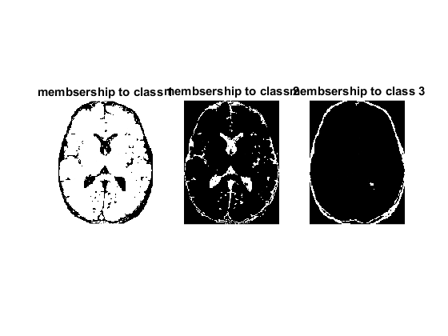
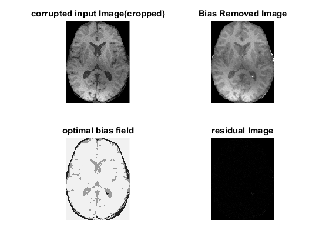
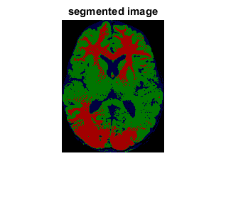

Contents
Load images
clc;clear;close all
load('assignmentSegmentBrain.mat')
inputIm=imageData.*imageMask;
[m,n]=size(inputIm);
Cropping
a=sum(imageMask);
b=sum(imageMask,2);
rowMin=find(b~=0,1,'first');
rowMax=find(b~=0,1,'last');
columnMin=find(a~=0,1,'first');
columnMax=find(a~=0,1,'last');
rect=[columnMin rowMin columnMax-columnMin rowMax-rowMin];
inputIm=imcrop(imageData.*imageMask,rect);
[m,n]=size(inputIm);
kmeans for comparison
mat1=reshape(inputIm,[m*n,1]);
[mat2,C]=kmeans(mat1,4);
mat2=reshape(mat2,[m,n]);
idx=find(C<0.1);
outIm=zeros(m,n,3);
j=0;
for i=1:4
if i~=idx
j=j+1;
outIm(:,:,j)=(mat2==i)*C(i);
end
end
initialization
values = [];
K=3;
q=5;
weights=fspecial('gaussian');
biasField=0.5*ones(m,n);
maxIm=max(max(inputIm));
minIm=min(min(inputIm));
range=maxIm-minIm;
membership=zeros(m,n,K);
classMeans=zeros(1,K);
for i=1:K
membership(:,:,i)=(inputIm>=minIm+range*(i-1)/K).*(inputIm< minIm+range*i/K);
classMeans(i)=minIm+range*(2*i-1)/(2*K);
end
membership(:,:,K)=membership(:,:,K)+(inputIm==maxIm);
classMeans=C(C>0.1);
Actual algorithm
D=zeros(m,n,K);
prevObjFunc=Inf;
flag=true;
iter=0;
while(flag)
iter=iter+1;
temp=zeros(m,n);
convolution1=conv2(biasField.^2,weights,'same');
convolution2=conv2(biasField,weights,'same');
for i=1:K
D(:,:,i)=inputIm.^2+classMeans(i)^2*convolution1-2*classMeans(i)*(inputIm.*convolution2);
D(:,:,i)=D(:,:,i)+(D(:,:,i)==0)*mean(mean(D(:,:,i)));
membership(:,:,i)=D(:,:,i).^(1/1-q)/100;
temp=temp+membership(:,:,i);
end
temp2=zeros(m,n);
temp3=zeros(m,n);
for i=1:K
membership(:,:,i)=membership(:,:,i)./temp;
numerator=sum(sum(membership(:,:,i).^q.*inputIm.*convolution2));
denominator=sum(sum(membership(:,:,i).^q.*convolution1));
classMeans(i)=numerator/denominator;
temp2=temp2+membership(:,:,i).^q*classMeans(i);
temp3=temp3+membership(:,:,i).^q*classMeans(i)^2;
end
biasField=conv2(inputIm.*temp2,weights,'same')./conv2(temp3,weights,'same');
temp=zeros(m,n);
for i=1:K
temp=temp+(membership(:,:,i).^q).*D(:,:,i);
end
currObjFunc=sum(sum(temp));
if abs(currObjFunc-prevObjFunc)/abs(currObjFunc)<0.01 && iter>=200
flag=0;
end
values = [values log(currObjFunc)];
prevObjFunc=currObjFunc;
end
biasRemovedImage=zeros(m,n);
for i=1:K
biasRemovedImage=biasRemovedImage+membership(:,:,i)*classMeans(i);
end
residualImage=inputIm-biasRemovedImage.*biasField;
outputIm=zeros(m,n,3);
for i=1:3
outputIm(:,:,i)=membership(:,:,i)*classMeans(i);
end
figure;plot(values)
title('log(objective function) at each iteration')
figure;
subplot(1,3,1)
imshow(membership(:,:,1))
title('membsership to class 1')
subplot(1,3,2)
imshow(membership(:,:,2))
title('membsership to class 2')
subplot(1,3,3)
imshow(membership(:,:,3))
title('membsership to class 3')
figure;
subplot(2,2,1)
imshow(inputIm)
title('corrupted input Image(cropped)')
subplot(2,2,2)
imshow(biasField)
title('Bias Removed Image')
subplot(2,2,3)
imshow(biasRemovedImage)
title('optimal bias field')
subplot(2,2,4)
imshow(residualImage)
title('residual Image')
figure
imshow(outIm)
title('segmented image')
classMeans
classMeans =
0.9447
0.6132
0.1362
   